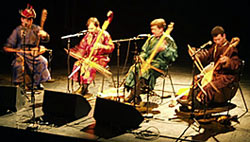
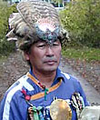
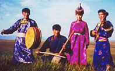

Возможно с этого стоило начать. Но желания такого очевидно не было.
В то время тувинцы в расписных халатах и островерхих меховых шапках превратились в будничное явления любого фестиваля world-music наряду с африканскими гриотами, дудочниками Анд и японскими барабанщиками тайко. Ситуация была пародоксальная: в то время как энтузиасты по всему миру - музыканты и эзотерики - наперегонки овладевали техникой горлового пения, концерты исконных представителей жанра проходили при возрастающей апатии зрителей. Потребовалось время осознать, что помимо экзотического звука западному слушателю надо дать нечто, за что можно зацепиться глазами и ушами. И когда это произошло, из безликого потока русских тувинцев возникли по-настоящему яркие звезды...
Хотя, если идти до конца, только потрясающая, космичная, неожиданная певица Cаинхо Намчылак убедила меня в необходимости этого трипа.
Горловое пение - это особая вокальная техника, производящая два независимых звука одновременно. Основной - низкий бурдонный звук, второй - серия резонирующих флейто-подобных гармоник, намного выше основного звука. Тувинцы обозначают все многообразие техник горлового пения термином хоректээр. Тувинские легенды говорят о древнем происхождении этой практики: первые горловики старались копировать естественные звуки природы, такие как бурлящая вода или воющий ветер. В основе этого интереса была вера в то, что у всего есть душа или это место обитания духов.
Формально горловому пению не учатся, скорее его подхватывают как язык. Раньше среди исполнителей было очень мало женщин из-за предубеждения, что это может привести к бесплодию.
Интервенция горловиков на Запад началась в начале 90-х, и связана она с именами знаменитого физика, нобелевского лауреата Richard Feinman, этно-музыковеда Теодора Левина и Назима Надирова. Символично, что в рамках Советского Союза горловое пение «культурно» не экспортировалось. Первый сборный альбом тувинской горловой музыки Tuva: Voices from the Center of Asia появился в 1990 и с этого момента стиль, уникальное звучание и название Тува стали всемирно известны.
Стили горлового пения
Сыгыт
 Хоомей
Хоомей
Название cтиля khöömei или khoomii происходит от монгольского слова, обозначающего горло.
Каргыраа
Тувинское слово каргыраа означает голос лошади.
Борбаннадыр
Эзенгилээр
Тувинское слово эзенгилээр означает cтремена.
Известные разновидности (по современной древнетюркской терминологии): чыландык (гибрид сыгыта и каргыраа), деспен, деспен борбан, опей хоомей, буга хоомей, думчуктаар, киштээр, канзып (вид каргыраа), хову каргыраазы, кожагар каргыраазы, даг каргыраазы...
[Позже я постараюсь наглядно показать акустику горлового пения, потому что это действительно интересно.]
В то время тувинцы в расписных халатах и островерхих меховых шапках превратились в будничное явления любого фестиваля world-music наряду с африканскими гриотами, дудочниками Анд и японскими барабанщиками тайко. Ситуация была пародоксальная: в то время как энтузиасты по всему миру - музыканты и эзотерики - наперегонки овладевали техникой горлового пения, концерты исконных представителей жанра проходили при возрастающей апатии зрителей. Потребовалось время осознать, что помимо экзотического звука западному слушателю надо дать нечто, за что можно зацепиться глазами и ушами. И когда это произошло, из безликого потока русских тувинцев возникли по-настоящему яркие звезды...
Хотя, если идти до конца, только потрясающая, космичная, неожиданная певица Cаинхо Намчылак убедила меня в необходимости этого трипа.
Горловое пение - это особая вокальная техника, производящая два независимых звука одновременно. Основной - низкий бурдонный звук, второй - серия резонирующих флейто-подобных гармоник, намного выше основного звука. Тувинцы обозначают все многообразие техник горлового пения термином хоректээр. Тувинские легенды говорят о древнем происхождении этой практики: первые горловики старались копировать естественные звуки природы, такие как бурлящая вода или воющий ветер. В основе этого интереса была вера в то, что у всего есть душа или это место обитания духов.
Формально горловому пению не учатся, скорее его подхватывают как язык. Раньше среди исполнителей было очень мало женщин из-за предубеждения, что это может привести к бесплодию.
Интервенция горловиков на Запад началась в начале 90-х, и связана она с именами знаменитого физика, нобелевского лауреата Richard Feinman, этно-музыковеда Теодора Левина и Назима Надирова. Символично, что в рамках Советского Союза горловое пение «культурно» не экспортировалось. Первый сборный альбом тувинской горловой музыки Tuva: Voices from the Center of Asia появился в 1990 и с этого момента стиль, уникальное звучание и название Тува стали всемирно известны.
Стили горлового пения
Сыгыт
Название cтиля khöömei или khoomii происходит от монгольского слова, обозначающего горло.
Каргыраа
Тувинское слово каргыраа означает голос лошади.
Эзенгилээр
Тувинское слово эзенгилээр означает cтремена.
Известные разновидности (по современной древнетюркской терминологии): чыландык (гибрид сыгыта и каргыраа), деспен, деспен борбан, опей хоомей, буга хоомей, думчуктаар, киштээр, канзып (вид каргыраа), хову каргыраазы, кожагар каргыраазы, даг каргыраазы...
[Позже я постараюсь наглядно показать акустику горлового пения, потому что это действительно интересно.]
Музыканты
Саинхо Намчылак
"Никто бы не знал, что такое Тува, если бы не Саинхо", - Peter Gabriel.
Саинхо такое потрясающее явление музыки, культуры и мировосприятия, что говорить о ней стандартным событийным набором нет ни смысла, ни желания. Она такая одна, и слишком много и слишком разная... Слишком спорная, чтобы безоговорочно принять. И она пример того, что границы - только в голове и возможно все... если есть талант, конечно.
Йо! Наконец, мне удалось побывать на ее концерте! И сказать ей лично спасибо - и увидеть усталые, беспомощные, детские глаза в ответ.
Хун-Хур-Ту
Помимо насыщенного концертного графика в рамках группы, музыканты играют с разными мировыми звездами. Один из самых незабываемых таких проектов - сотрудничество с болгарским женским хором Angelite при участии Михаила Альперина. Отметились они и работой с Frank Zappa, The Kronos Quartet, The Chieftains, Johnny "Guitar" Watson и L. Shankar, и появлением на саундтреке Ry Cooder к фильму Geronimo. Помимо этого Кайгал-оол Ховалыг сотрудничал группами World Groove Band, Волков Трио, Вершки Да Корешки, а Анатолий Куулар выступает в концертах Ансамбля Хомузов.
Ят-Ха/Yat-Kha
Ят-Ха - это прежде всего Альберт Кувезин, лицо, содержание и дух группы. Поначалу его увлечение музыкой было связано с панком и гитарным роком, интерес к тувинской музыке пришел позже. Его фирменный стиль - канзып, наиболее «низкая» разновидность каргыраа, ближе к техникам горлового пения хакассов, чем тувинцев. В 1990 Brian Eno вручил ему специальный приз в виде микрофона на первом конкурсе «Азия Даусы/Голос Азии», Алма-Аты. В 1991 они с Александром Бапа сформировали группу Кунгуртук/Хуун-Хуур-Ту, в рамках которой Альберт принял участие в записи первого альбома современной тувинской музыки.
В 1992 вместе с московским электронщиком Иваном Соколовским Кувезин выпускает альбом Ят-Ха: Афропагия. Этот момент считается формальным рождением проекта. Название как альбому, так и группе дал тувинский инструмент ят-ха, разновидность цитры. Их концертный дебют состоялся в 1992 в Берлине на фестивале WOMEX. Услышав альбом Енисей-Панк(1995), Paddy Moloney, лидер группы Chieftains, предложил им контракт на своем лэйбле Wicklow.
Ят-Ха радикально отличается от остальных тувинских групп тем, что пытается создавать современную музыку, где горловое пение - лишь один из элементов звукового полотна. Пока больше экспериментов... В 2001 группа вместе с Саинхо выступали с большим туром по Европе.
На первом конкурсе World Music Awards под эгидой BBC' Radio3 (2003) Ят-Ха победила в категории Asia/Pacific.
Современный состав: Альберт Кувезин (канзып, гитара, ят-ха), Евгений Ткачев (ударные), Махмуд Скрипальщиков (бас), Радик Тюлюш (хомей, игиль) и певица Сайлык Оммун (ят-ха).
Николай Ооржак
Помимо пения он играет на игиле, тувинских ударных и хомузе. С 1998 года работает в организации тувинских шаманов «Тос Дээр» под руководством профессора, доктора исторических наук Монгуш Кенин-Лопсана. Участник международных конгрессов по шаманизму и фольклорной музыке. Проводит исследования по возможности объединения действия традиционных методик Тувинского шаманизма и методик профессионального музыкального исполнительства. Вместе с американским музыкантом/инструктором Steve Sklar участвует в турах с лекциями о шаманизме и обучением технике горлового пения. Периодически выступает с Оркестром Примитивной Музыки известного исполнителя на ударных, композитора и импровизатора Михаила Жукова.
Конгар-ол Ондар
Один из самых авторитетных на Западе тувинских горловиков. Профессионально заниматься музыкой начал сразу после школы, сначала при Тувинском культурном центре, затем в ансамбле Чилиш. После службы в армии, где Ондар долго лечился от серьезного растяжения шеи, закончил Педагогический институт Кызыла как преподаватель русского языка. В 1988 участвовал в создании Ансамбля Тыва.
В начале 90х Ондар стал первым тувинцем, выступившим в Европе с серией очень успешных концертов, затем победил в первом международном фестивале горлового пения под эгидой ЮНЕСКО. В 1992 Конгар-ол Ондар был удостоен звания Народный Горловик Тувы. В 1993 он сотрудничал с таким мировыми звездами, как Frank Zappa, Mickey Hart и Kronos Quartet (альбом Night Prayers) и был специальным гостем совместного нью-йоркского концерта японского авангардиста Kitaro с тибетскими монахами.
В 1994 Конгар-ол Ондар начал сотрудничество со слепым американским музыкантом Paul "Earthquake" Pena над проектом Genghis Blues. Затем Paul Pena приезжал в Туву учиться горловому пению и этому посвящен фильм под тем же названием.
Наиболее успешной и интересной из сольных работ Ондара стал записанный под патронажем президента Warner/Reprise Nashville Jim Ed Norman альбом Back Tuva Future(1999). В записи приняли участие такие кантри-звезды, как Willie Nelson и Randy Scruggs, индейский музыкант Bill Miller и многие другие...
Чиргилчин
Группа была сформирована Александром Бапа в январе 1996 и в конце того же года на лэйбле Shanachie вышел их первый (и пока единственный) альбом The Wolf and the Kid. Запись была достаточно успешной, за ней последовал длительный период клубно-фестивальной активности по Европе и Америке. В России группа известна в основном тем, что питерская группа Deadушки использовала сэмплированные фрагменты их музыки.
Состав: певица Айдысмаа Кандан, певцы и исполнители на тувинских инструментах Алдар Тамдын, Игорь Кошкендей, Монгун-оол Ондар. В их активе несколько сольных и групповых Гран-При фестивалей горлового пения. Игорь Кошкендей в 1998 выпустил сольный альбом Music From Tuva на известном по работе с Саинхо лейбле Amiata Records.
Шу-Де
Экспериментальный тувинский проект с довольно часто меняющимся составом. Был создан в 1992 Борис Салчаком, Алексеем и Надеждой Шойгу. Несколько лет с ними работал Олег Куулар. После записи второго альбома Kongurei, 1996 трое участников группы ушли в новый проект Чиргилчин (однако обе группы продолжают существовать в рамках единого менеджмента PureNatureMusic).
Состав (наиболее актуальный): Борис Салчак (игиль, ударные), Шолбан Салчак (игиль, бызанчи) и швейцарский гитарист Christi Doran.
Ансамбль «Тыва»
Ансамбль был создан в Кызыле в 1988 музыковедом-фольклористом Зоей Кыргысовной Кыргыс. Через его состав прошли такие звезды, как Кайгал-оол Ховалыг и Анатолий Куулар (Хуун-Хуур-Ту), Николай Ооржак, Геннадий Тумат, Конгар-ол Ондар и Олег Куулар. Именно этот проект начал экспансию тувинского горлового пения на Запад. С 1993 «Тыва» является частью Международного Научного Центра «Хоомей», возглавляемого той же Зоей Кыргыс.
Сегодня проект существует в двух составах - «молодой» и «старый». Молодой представляют певцы Аяс Данзырын, Вадим Сарыглар, певица Шончалай Чооду, исполнитель на игиле Начин Чооду. В 2000 году вышел первый альбом этого состава - Эзенгиллер.
Федор Тау
Народный хоомейжи Республики Тыва, знаменитый тувинский лыжник, обладатель звания «Лучший спортсмен XX века» и замечательный исполнитель стиля каргыраа. В 2001 его семидесятилетие было отпраздновано фестивалем лучших горловиков Тувы.
Чангы-Хай
Йо! Наконец, мне удалось побывать на ее концерте! И сказать ей лично спасибо - и увидеть усталые, беспомощные, детские глаза в ответ.
Хун-Хур-Ту

Крупнейшая тувинская группа современности была создана Александром Бапа и Альбертом Кувезиным при участии Саяна Бапа (каргыраа, тошпулур, игиль, моринкхур, гитара) и Кайгал-оола Ховалыга (хоомей, сыгыт, каргыраа, игиль, хомуз) в 1991 под именем Кунгуртуг. Вскоре название было изменено на Хун-Хур-Ту, что дословно означает «солнечный поток воздуха». В 1992 Кувезина заменяет Анатолий Куулар (борбаннадыр, бызанчи, хомуз), в 1995 приходит Алексей Сарыглар (сыгыт, игиль, ударные) и на этом завершилось формирование современного состава [Александр Бапа к тому времени переключился на продюсирование новых тувинских групп в рамках своего проекта PureNatureMusic].Помимо насыщенного концертного графика в рамках группы, музыканты играют с разными мировыми звездами. Один из самых незабываемых таких проектов - сотрудничество с болгарским женским хором Angelite при участии Михаила Альперина. Отметились они и работой с Frank Zappa, The Kronos Quartet, The Chieftains, Johnny "Guitar" Watson и L. Shankar, и появлением на саундтреке Ry Cooder к фильму Geronimo. Помимо этого Кайгал-оол Ховалыг сотрудничал группами World Groove Band, Волков Трио, Вершки Да Корешки, а Анатолий Куулар выступает в концертах Ансамбля Хомузов.
Ят-Ха/Yat-Kha
Ят-Ха - это прежде всего Альберт Кувезин, лицо, содержание и дух группы. Поначалу его увлечение музыкой было связано с панком и гитарным роком, интерес к тувинской музыке пришел позже. Его фирменный стиль - канзып, наиболее «низкая» разновидность каргыраа, ближе к техникам горлового пения хакассов, чем тувинцев. В 1990 Brian Eno вручил ему специальный приз в виде микрофона на первом конкурсе «Азия Даусы/Голос Азии», Алма-Аты. В 1991 они с Александром Бапа сформировали группу Кунгуртук/Хуун-Хуур-Ту, в рамках которой Альберт принял участие в записи первого альбома современной тувинской музыки.
В 1992 вместе с московским электронщиком Иваном Соколовским Кувезин выпускает альбом Ят-Ха: Афропагия. Этот момент считается формальным рождением проекта. Название как альбому, так и группе дал тувинский инструмент ят-ха, разновидность цитры. Их концертный дебют состоялся в 1992 в Берлине на фестивале WOMEX. Услышав альбом Енисей-Панк(1995), Paddy Moloney, лидер группы Chieftains, предложил им контракт на своем лэйбле Wicklow.
Ят-Ха радикально отличается от остальных тувинских групп тем, что пытается создавать современную музыку, где горловое пение - лишь один из элементов звукового полотна. Пока больше экспериментов... В 2001 группа вместе с Саинхо выступали с большим туром по Европе.
На первом конкурсе World Music Awards под эгидой BBC' Radio3 (2003) Ят-Ха победила в категории Asia/Pacific.
Современный состав: Альберт Кувезин (канзып, гитара, ят-ха), Евгений Ткачев (ударные), Махмуд Скрипальщиков (бас), Радик Тюлюш (хомей, игиль) и певица Сайлык Оммун (ят-ха).
Николай Ооржак

Мастер тувинского горлового пения стиля хоомей, потомственный шаман. Родился в декабре 1949 в небольшой деревне Хорум-Даг в восточной Туве. После школы работал пастухом, тогда же начал перенимать технику горлового пения отца и деда. После службы в армии играл в народном тувинском театре Чадаана и затем работал директором народных театров при Бурятском культурном центре в Улан-Удэ. В 1989 Николай Ооржак был признан лучшим исполнителем стиля каргыраа на первом международном конкурсе горлового пения, проходившем в Кызыле. После этого он со своим учеником Борисом Херлаем принимал участие в создании эпохального Ансамбля Тува.Помимо пения он играет на игиле, тувинских ударных и хомузе. С 1998 года работает в организации тувинских шаманов «Тос Дээр» под руководством профессора, доктора исторических наук Монгуш Кенин-Лопсана. Участник международных конгрессов по шаманизму и фольклорной музыке. Проводит исследования по возможности объединения действия традиционных методик Тувинского шаманизма и методик профессионального музыкального исполнительства. Вместе с американским музыкантом/инструктором Steve Sklar участвует в турах с лекциями о шаманизме и обучением технике горлового пения. Периодически выступает с Оркестром Примитивной Музыки известного исполнителя на ударных, композитора и импровизатора Михаила Жукова.
Конгар-ол Ондар
Один из самых авторитетных на Западе тувинских горловиков. Профессионально заниматься музыкой начал сразу после школы, сначала при Тувинском культурном центре, затем в ансамбле Чилиш. После службы в армии, где Ондар долго лечился от серьезного растяжения шеи, закончил Педагогический институт Кызыла как преподаватель русского языка. В 1988 участвовал в создании Ансамбля Тыва.
В начале 90х Ондар стал первым тувинцем, выступившим в Европе с серией очень успешных концертов, затем победил в первом международном фестивале горлового пения под эгидой ЮНЕСКО. В 1992 Конгар-ол Ондар был удостоен звания Народный Горловик Тувы. В 1993 он сотрудничал с таким мировыми звездами, как Frank Zappa, Mickey Hart и Kronos Quartet (альбом Night Prayers) и был специальным гостем совместного нью-йоркского концерта японского авангардиста Kitaro с тибетскими монахами.
В 1994 Конгар-ол Ондар начал сотрудничество со слепым американским музыкантом Paul "Earthquake" Pena над проектом Genghis Blues. Затем Paul Pena приезжал в Туву учиться горловому пению и этому посвящен фильм под тем же названием.
Наиболее успешной и интересной из сольных работ Ондара стал записанный под патронажем президента Warner/Reprise Nashville Jim Ed Norman альбом Back Tuva Future(1999). В записи приняли участие такие кантри-звезды, как Willie Nelson и Randy Scruggs, индейский музыкант Bill Miller и многие другие...
Чиргилчин
"Название Чиргилчин пришло из традиционной песни", - со слов Айдысмаа,-
"и буквально означает движение воздуха/миражи в полуденную жару".
"и буквально означает движение воздуха/миражи в полуденную жару".

Группа была сформирована Александром Бапа в январе 1996 и в конце того же года на лэйбле Shanachie вышел их первый (и пока единственный) альбом The Wolf and the Kid. Запись была достаточно успешной, за ней последовал длительный период клубно-фестивальной активности по Европе и Америке. В России группа известна в основном тем, что питерская группа Deadушки использовала сэмплированные фрагменты их музыки.
Состав: певица Айдысмаа Кандан, певцы и исполнители на тувинских инструментах Алдар Тамдын, Игорь Кошкендей, Монгун-оол Ондар. В их активе несколько сольных и групповых Гран-При фестивалей горлового пения. Игорь Кошкендей в 1998 выпустил сольный альбом Music From Tuva на известном по работе с Саинхо лейбле Amiata Records.
Шу-Де
Экспериментальный тувинский проект с довольно часто меняющимся составом. Был создан в 1992 Борис Салчаком, Алексеем и Надеждой Шойгу. Несколько лет с ними работал Олег Куулар. После записи второго альбома Kongurei, 1996 трое участников группы ушли в новый проект Чиргилчин (однако обе группы продолжают существовать в рамках единого менеджмента PureNatureMusic).
Состав (наиболее актуальный): Борис Салчак (игиль, ударные), Шолбан Салчак (игиль, бызанчи) и швейцарский гитарист Christi Doran.
Ансамбль «Тыва»
Ансамбль был создан в Кызыле в 1988 музыковедом-фольклористом Зоей Кыргысовной Кыргыс. Через его состав прошли такие звезды, как Кайгал-оол Ховалыг и Анатолий Куулар (Хуун-Хуур-Ту), Николай Ооржак, Геннадий Тумат, Конгар-ол Ондар и Олег Куулар. Именно этот проект начал экспансию тувинского горлового пения на Запад. С 1993 «Тыва» является частью Международного Научного Центра «Хоомей», возглавляемого той же Зоей Кыргыс.
Сегодня проект существует в двух составах - «молодой» и «старый». Молодой представляют певцы Аяс Данзырын, Вадим Сарыглар, певица Шончалай Чооду, исполнитель на игиле Начин Чооду. В 2000 году вышел первый альбом этого состава - Эзенгиллер.
Федор Тау
Народный хоомейжи Республики Тыва, знаменитый тувинский лыжник, обладатель звания «Лучший спортсмен XX века» и замечательный исполнитель стиля каргыраа. В 2001 его семидесятилетие было отпраздновано фестивалем лучших горловиков Тувы.
Чангы-Хай
©2002-2005 sahua d. Собрано невозможное.